반도체 공업
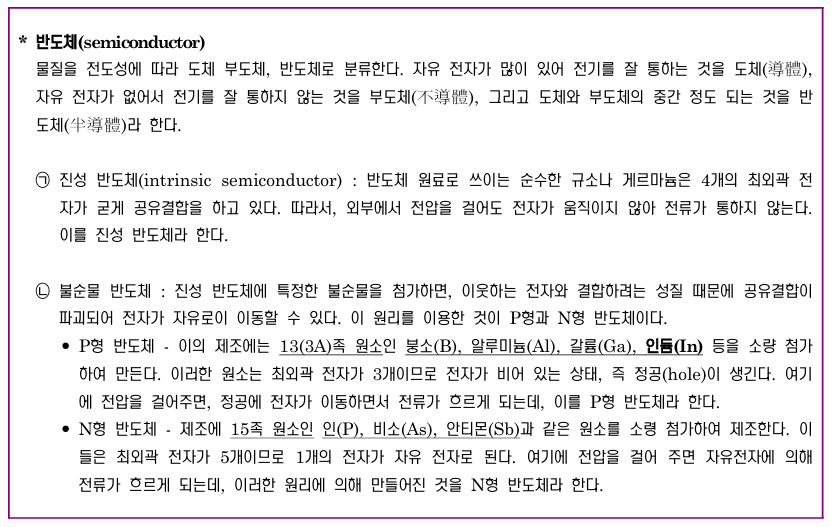
전기가 흐르는 것을 도체, 흐르지 않는 것을 부도체라고 한다. 이때 중간의 성질을 가지는 것을 반도체라고 한다. 자유 전자가 많냐 적냐에 따라 도체와 부도체가 나뉘게 된다.
보통 도체는 금속, 부도체는 비금속이고 반도체는 준금속이라 불리는 원소로 구성된다. Si나 Ge가 주성분이라고 보면 된다. 이것들로만 구성된 반도체를 진성반도체(전류가 잘 안흐름), 그 외 불순물을 섞어 전류가 잘 흐르게 한 것을 불순물 반도체라고 부른다. 이때 불순물의 종류에 따라 +역할 또는 -역할을 하는데, +역할의 불순물이 섞이면 p형, -역할이 섞이면 n형이다.
si는 원자가 전자가 4개이므로, 규소 4개와 공유결합할 수 있음. 그러나 옆에 전자가 1개 부족한 원소(13족)이 규소 대신 오게 된다면 정공이 생겨서 전자를 받으려는 성질이 강해지고, 15족이 오면 자유전자가 한개 생겨 전자를 내주기 쉬워진다. 둘다 전압을 걸면 전자의 이동(전류)가 생기기 쉽다.
p형:13족인 붕소,알루미늄,갈륨,인듐(B,Ai,Ga,In)
n형:15족인 인 비소 안티몬(P, As, Sb)
이제 반도체의 원리에 대해 직접적으로 알아보도록 하자.
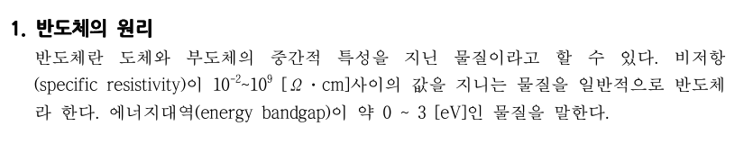
물체에는 원자가전자띠가 있고, 그 위에 전도띠가 존재한다. 만약 원자가전자띠에 있는 전자가 전도띠로 올라가면 이 전자는 움직일 수 있다. 도체는 원자가전자띠 위에 전도띠가 바로 붙어있어서 전도띠로 이동이 수월하다. 반면 부도체는 둘 사이 거리가 멀다. 반도체는 거리가 중간정도라 에너지를 받으면 올라갈 수 있다. 이것이 반도체이다. 이를 밴드갭이론이라고 한다.
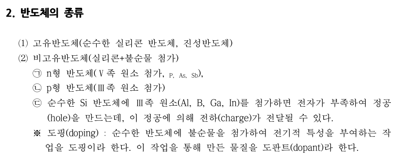
고유반도체=진성반도체이다. 진성에 불순물을 도핑하여 불순물반도체를 만들 수 있다. 3족을 첨가해 정공이 생기게 하면 P형이고 15족을 첨가해 자유전자가 생기게 하면 N형이다.
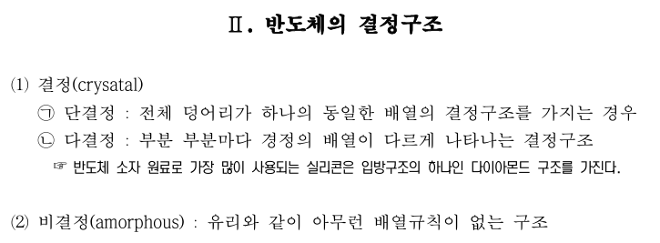
결정이란 규칙적인 배열을 가지는 것을 의미한다. 물질을 분석할 때 먼저 결정구조를 분석해두면, 이것들이 규칙적으로 배열되어 물질이 생기므로 해석이 편하다. 반복단위가 하나인 경우를 단결정이라고 하고, 반복 단위가 많은 경우를 다결정이라고 한다. 반도체 소자 원료로 가장 많이 쓰이는 실리콘은 다이아몬드 구조의 단결정을 가진다.
반대로 유리처럼 결정이 아닌 것도 존재한다. 이는 불규칙적인 배열을 가진다.
이제부턴 반도체의 제조공정에 대해 알아볼 것이다.
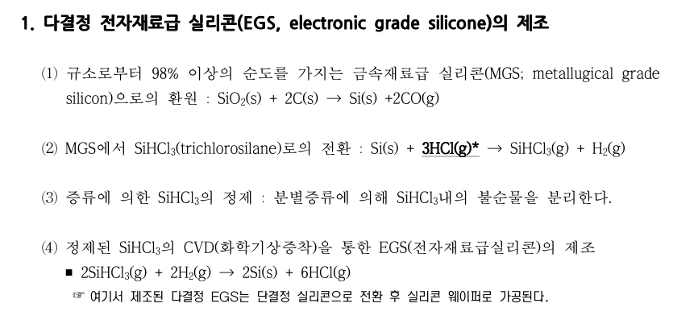
먼저 반도체의 재료인 실리콘은 다결정 형태로 만든다음 단결정으로 세공하는 과정을 거친다. 실리콘은 전자재료로 쓰려면 몇가지 정제가 필요하다. 실리콘의 재료인 규소에서 98%의 순도를 가지는 실리콘을 추출해낸다. 이걸 MGS라고 부른다. MGS를 위에 나열된 공정을 거쳐서 EGS로 만든다.
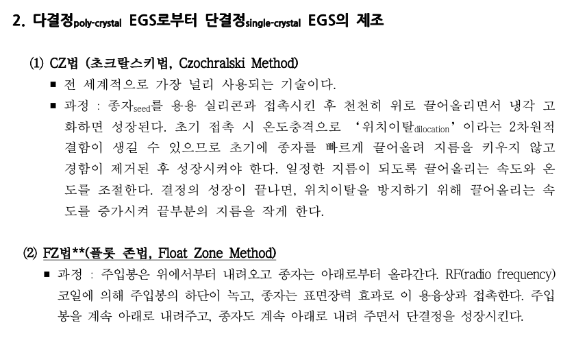
위에서 만들어진 다결정EGS(순수 실리콘)을 가지고 단결정 Si를 만들 것이다. 원래 결정은 동일한 패턴으로 확장하는 것이 결정이다. 이때 결정의 성장의 핵이 되는 초기 실리콘 결정을 seed라고 부른다.
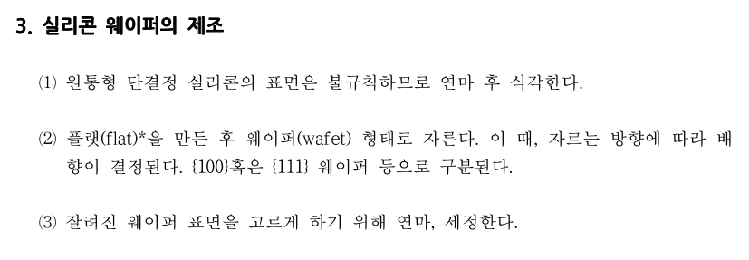
순수한 단결정 실리콘을 웨이퍼라고 불리는, 기초형태로 다듬는다.
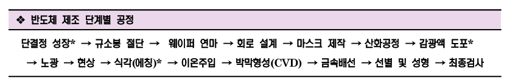 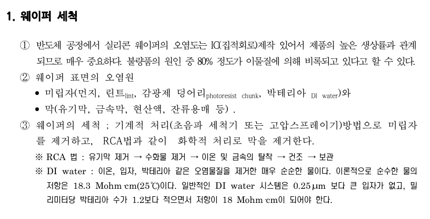 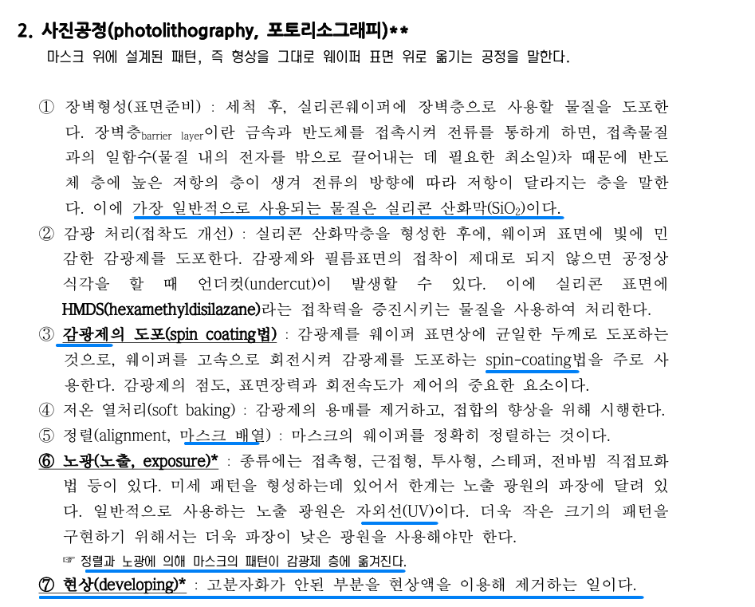
이후 하드베이킹을 실시한다. 남아있는 현상액을 제거하고 접착을 강하게 한다.
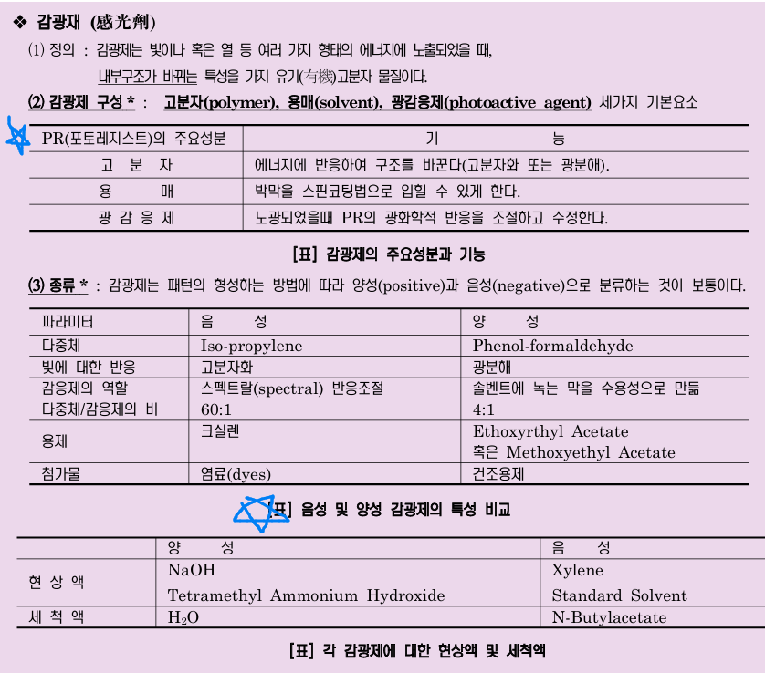 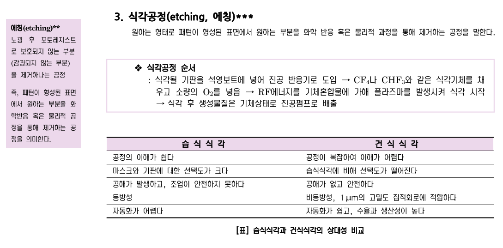
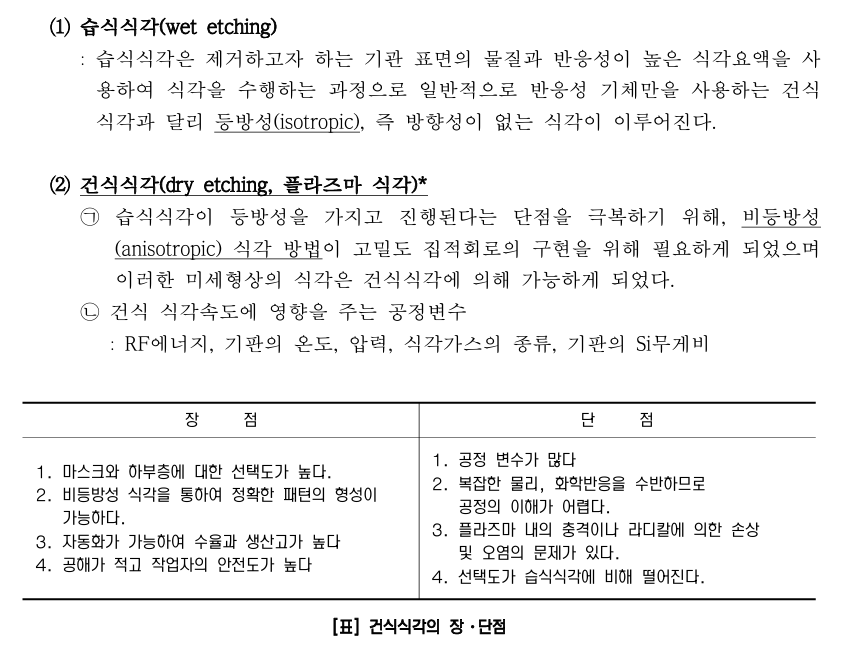 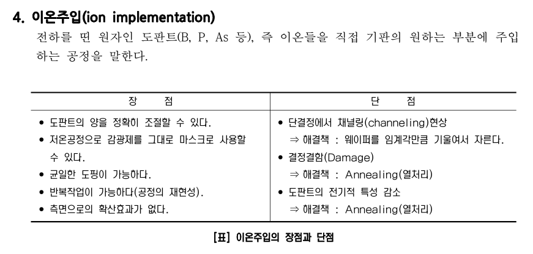
불순물을 강하게 때려서 주입하는 것이다.
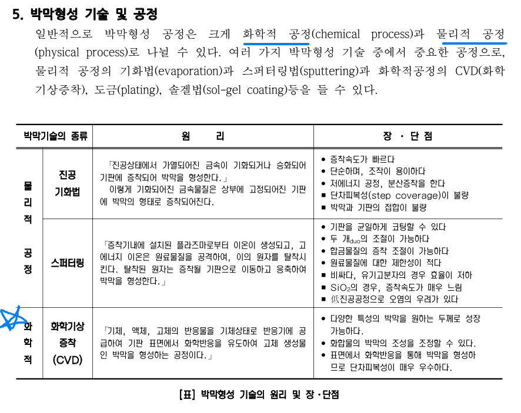
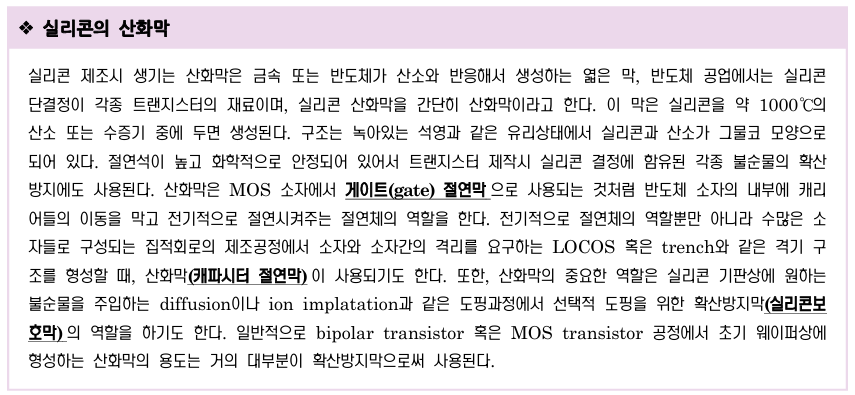